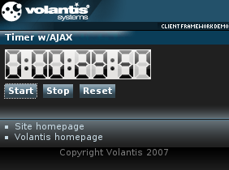

The Timer widget can be used to count time, both up and down, in a predefined range, for example time left to the end of the auction. In addition, it can invoke specified action when the time limit is reached.
The Timer widget uses the same display mechanism as the Clock widget. They also share some XDIME elements and style properties. See Showing current time for more information.

<widget:timer id="myTimer">
<widget:load src="service/timer"/>
<widget:clock-content type="digit" value="0">
<object src="/images/clock/clockWidget_grey_0_r_01.mimg">0</object>
</widget:clock-content>
<widget:clock-content type="digit" value="1">
<object src="/images/clock/clockWidget_grey_1_r_01.mimg">1</object>
</widget:clock-content>
...
</widget:timer><widget:load src="service/timer"/>
<response:response xmlns="http://www.w3.org/2002/06/xhtml2"
xmlns:mcs="http://www.volantis.com/xmlns/2006/01/xdime/mcs"
xmlns:response="http://www.volantis.com/xmlns/2006/05/widget/response">
<response:head>
<response:link rel="mcs:theme" href="/main.mthm"/>
</response:head>
<response:body>
<response:timer start-time="0" stop-time="600000"/>
</response:body>
</response:response><widget:button action="myTimer#start">Start</widget:button> <widget:button action="myTimer#stop">Stop</widget:button> <widget:button action="myTimer#reset">Reset</widget:button>
<?xml version="1.0" encoding="UTF-8"?>
<html xmlns="http://www.w3.org/2002/06/xhtml2"
xmlns:mcs="http://www.volantis.com/xmlns/2006/01/xdime/mcs"
xmlns:template="http://www.volantis.com/xmlns/marlin-template"
xmlns:widget="http://www.volantis.com/xmlns/2006/05/widget">
<head>
<title>Timer Widget with AJAX</title>
<link rel="mcs:theme" href="/themes/main.mthm"/>
<link rel="mcs:layout" href="/layouts/main.mlyt"/>
<style type="text/css" media="handheld,all">
#myTimer{
mcs-datetime-format: '%d%1%H%1%i%1%s';
}
</style>
</head>
<body>
<template:apply href="templates/demo-main.xdtpl">
<template:binding name="title" value="Timer w/AJAX"/>
<template:binding name="content">
<template:complexValue>
<div>
<widget:timer id="myTimer">
<widget:load src="service/timer"/>
<widget:clock-content type="digit" value="0">
<object src="/images/clock/clockWidget_grey_0_r_01.mimg">0</object>
</widget:clock-content>
<widget:clock-content type="digit" value="1">
<object src="/images/clock/clockWidget_grey_1_r_01.mimg">1</object>
</widget:clock-content>
<widget:clock-content type="digit" value="2">
<object src="/images/clock/clockWidget_grey_2_r_01.mimg">2</object>
</widget:clock-content>
<widget:clock-content type="digit" value="3">
<object src="/images/clock/clockWidget_grey_3_r_01.mimg">3</object>
</widget:clock-content>
<widget:clock-content type="digit" value="4">
<object src="/images/clock/clockWidget_grey_4_r_01.mimg">4</object>
</widget:clock-content>
<widget:clock-content type="digit" value="5">
<object src="/images/clock/clockWidget_grey_5_r_01.mimg">5</object>
</widget:clock-content>
<widget:clock-content type="digit" value="6">
<object src="/images/clock/clockWidget_grey_6_r_01.mimg">6</object>
</widget:clock-content>
<widget:clock-content type="digit" value="7">
<object src="/images/clock/clockWidget_grey_7_r_01.mimg">7</object>
</widget:clock-content>
<widget:clock-content type="digit" value="8">
<object src="/images/clock/clockWidget_grey_8_r_01.mimg">8</object>
</widget:clock-content>
<widget:clock-content type="digit" value="9">
<object src="/images/clock/clockWidget_grey_9_r_01.mimg">9</object>
</widget:clock-content>
<widget:clock-content type="separator" value="1">
<object src="/images/clock/cell_5_11x37.mimg">:</object>
</widget:clock-content>
<widget:clock-content type="separator" value="2">
<object src="/images/clock/clockWidget_grey_null_r_01.mimg"/>
</widget:clock-content>
<widget:clock-content type="separator" value="3">
<object src="/images/clock/clockWidget_grey_pause_r_01.mimg"/>
</widget:clock-content>
</widget:timer>
</div>
<div class="buttons">
<widget:button action="myTimer#start" style="margin-right: 8px;">
Start</widget:button>
<widget:button action="myTimer#stop" style="margin-right: 8px">
Stop</widget:button>
<widget:button action="myTimer#reset">Reset</widget:button>
</div>
</template:complexValue>
</template:binding>
</template:apply>
</body>
</html>
| Name | Purpose |
|---|---|
| div | A section used to add extra structure to documents. Style sheets can be used to control the presentation. |
| object | A reference to a media resource. Object allows a variety of media resources to be placed on the rendered page. The resource may be specified as an image policy or a device depended mime type. Object also allows the control of media transcoding to ensure the resource will render on the requesting agent. See References to media for details. |
| response:timer | Response element for a Timer widget. Allows to set the start-time and stop-time attributes via AJAX request. |
| widget:button | A general purpose element, used by widgets which need a button-like control. |
| widget:clock-content | Defines a markup for the clock digits, separators, AM/PM indicators, as well as the day and month names. It can contain any markup, in particular text and images. |
| widget:load | Controls the loading of a widget's contents in relation to the containing page. |
| widget:timer | Defines a timer. |
| Core attributes | Attributes that are common to XDIME 2 elements. |